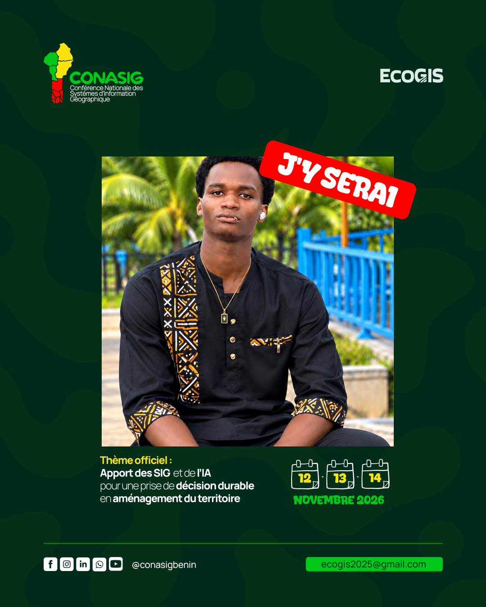
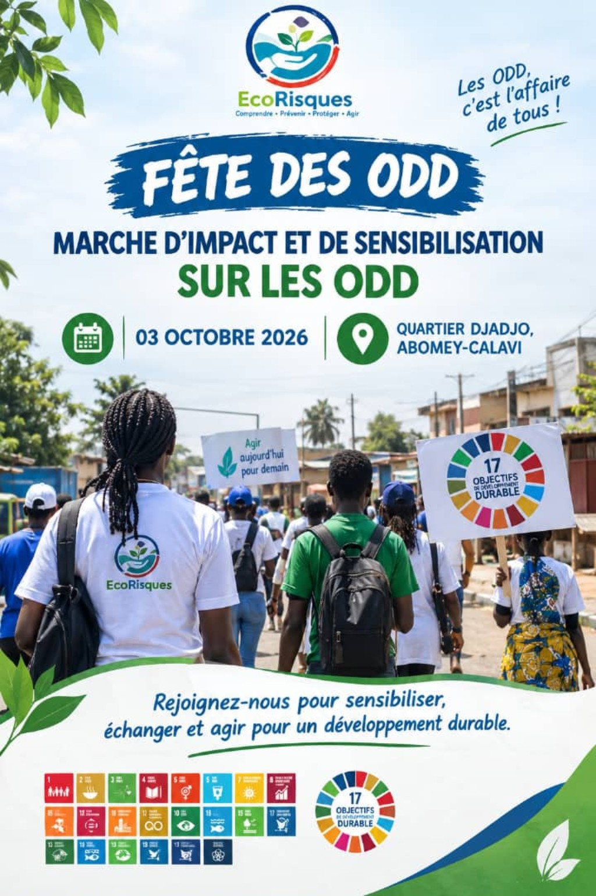
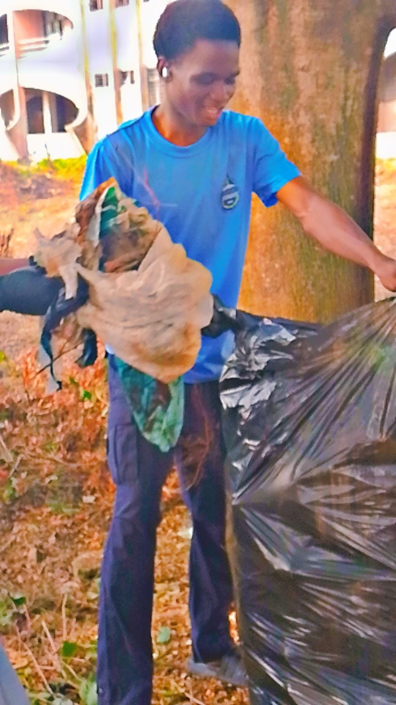
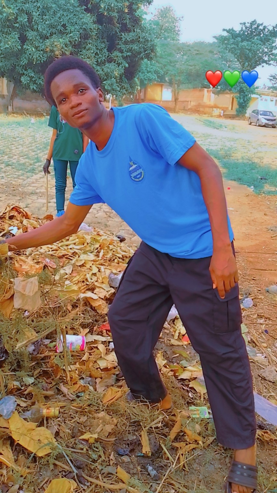
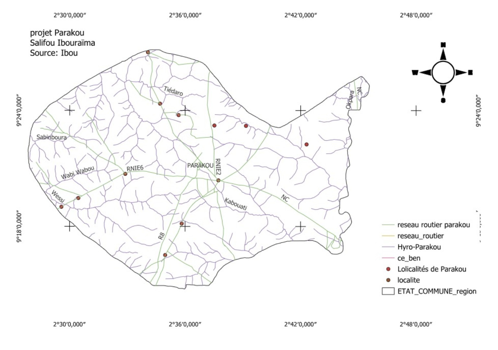
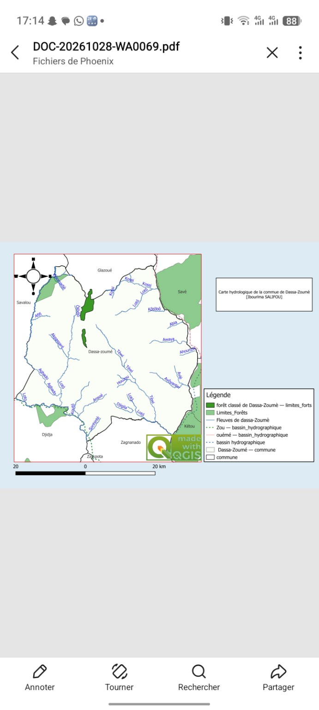

À propos de moi
Je suis étudiant en Licence 2 en Gestion des Crises et Risques liés à l'Eau et au Climat (GCREC) à l'Université d'Abomey-Calavi. Je m'intéresse particulièrement à la gestion durable des ressources en eau, aux risques hydroclimatiques, aux changements climatiques et à la protection de l'environnement.
Mon parcours universitaire me permet de développer progressivement des compétences en systèmes d'information géographique, cartographie, hydrologie et analyse des risques. Je souhaite approfondir ces domaines à travers les travaux pratiques, les projets académiques et les expériences professionnelles.
Formation académique
Licence 2 – GCREC
Gestion des Crises et Risques liés à l'Eau et au Climat
Université d'Abomey-Calavi (UAC), Bénin
Compétences et domaines d'intérêt
SIG et QGIS
Niveau intermédiaireGestion des couches géographiques et réalisation cartographique.
Cartographie thématique
DébutantReprésentation spatiale des phénomènes géographiques.
Télédétection
DébutantIntérêt pour l'observation de la Terre et l'analyse spatiale.
Données climatiques
DébutantInitiation à l'analyse des données climatiques.
Hydrologie
DébutantÉtude des ressources en eau et du fonctionnement des bassins versants.
Gestion des risques
DébutantPrévention et gestion des risques et catastrophes.
KoboCollect / KoboToolbox
DébutantInitiation à la collecte numérique des données.
Excel et statistiques
DébutantTraitement et analyse élémentaire des données.
Expériences et engagements
Participation à la conférence ÉcoGIS
Participation à une rencontre autour du thème : « Apport des SIG et de l'IA pour une prise de décision durable en aménagement du territoire ».
Engagement au sein d'ECORISQUE
Participation à des journées de salubrité, de sensibilisation et à des activités de célébration.
Activités de sensibilisation aux ODD
Participation à une marche et à des actions de sensibilisation autour des Objectifs de développement durable à Abomey-Calavi.
En images




Travaux et réalisations cartographiques


Cette rubrique accueillera les cartes et illustrations de mes prochains travaux pratiques.
Objectif professionnel
Développer mes compétences dans les domaines de l'eau, du climat, des systèmes d'information géographique et de la gestion des risques, afin de contribuer à la prévention des catastrophes, à l'adaptation aux changements climatiques et à la gestion durable des ressources naturelles.
Me contacter
Email : salifouibouraima520@gmail.com
Téléphone : +229 01 47 70 87 21
Localisation : Bénin